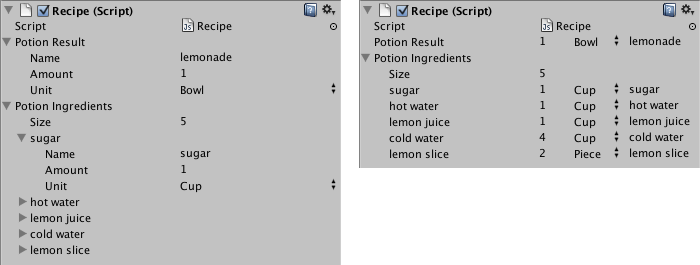

Property Drawers
Property Drawers can be used to customize the look of certain controls in the Inspector window by using attributes on your scripts, or by controlling how a specific Serializable class should look.
Property Drawers have two uses:
- Customize the GUI of every instance of a Serializable class.
- Customize the GUI of script members with custom Property Attributes.
Customize the GUI of a Serializable class
If you have a custom Serializable class, you can use a Property Drawer to control how it looks in the Inspector. Consider the Serializable class Ingredient in the script examples below (Note: These are not editor scripts. Property attribute classes should be placed in a regular script file):
C# (example):
using System;
using UnityEngine;
enum IngredientUnit { Spoon, Cup, Bowl, Piece }
// Custom serializable class
[Serializable]
public class Ingredient
{
public string name;
public int amount = 1;
public IngredientUnit unit;
}
public class Recipe : MonoBehaviour
{
public Ingredient potionResult;
public Ingredient[] potionIngredients;
}
Using a custom Property Drawer, every appearance of the Ingredient class in the Inspector can be changed. Compare the look of the Ingredient properties in the Inspector without and with a custom Property Drawer:

You can attach the Property Drawer to a Serializable class by using the CustomPropertyDrawer attribute and pass in the type of the Serializable class that it's a drawer for.
C# (example):
using UnityEditor;
using UnityEngine;
// IngredientDrawer
[CustomPropertyDrawer(typeof(Ingredient))]
public class IngredientDrawer : PropertyDrawer
{
// Draw the property inside the given rect
public override void OnGUI(Rect position, SerializedProperty property, GUIContent label)
{
// Using BeginProperty / EndProperty on the parent property means that
// prefab override logic works on the entire property.
EditorGUI.BeginProperty(position, label, property);
// Draw label
position = EditorGUI.PrefixLabel(position, GUIUtility.GetControlID(FocusType.Passive), label);
// Don't make child fields be indented
var indent = EditorGUI.indentLevel;
EditorGUI.indentLevel = 0;
// Calculate rects
var amountRect = new Rect(position.x, position.y, 30, position.height);
var unitRect = new Rect(position.x + 35, position.y, 50, position.height);
var nameRect = new Rect(position.x + 90, position.y, position.width - 90, position.height);
// Draw fields - passs GUIContent.none to each so they are drawn without labels
EditorGUI.PropertyField(amountRect, property.FindPropertyRelative("amount"), GUIContent.none);
EditorGUI.PropertyField(unitRect, property.FindPropertyRelative("unit"), GUIContent.none);
EditorGUI.PropertyField(nameRect, property.FindPropertyRelative("name"), GUIContent.none);
// Set indent back to what it was
EditorGUI.indentLevel = indent;
EditorGUI.EndProperty();
}
}
Customize the GUI of script members using Property Attributes
The other use of Property Drawer is to alter the appearance of members in a script that have custom Property Attributes. Say you want to limit floats or integers in your script to a certain range and show them as sliders in the Inspector. Using the built-in PropertyAttribute called RangeAttribute you can do just that:
C# (example):
// Show this float in the Inspector as a slider between 0 and 10
[Range(0f, 10f)]
float myFloat = 0f;
You can make your own PropertyAttribute as well. We'll use the code for the RangeAttribute as an example. The attribute must extend the PropertyAttribute class. If you want, your property can take parameters and store them as public member variables.
C# (example):
using UnityEngine;
public class MyRangeAttribute : PropertyAttribute
{
readonly float min;
readonly float max;
void MyRangeAttribute(float min, float max)
{
this.min = min;
this.max = max;
}
}
Now that you have the attribute, you need to make a Property Drawer that draws properties that have that attribute. The drawer must extend the PropertyDrawer class, and it must have a CustomPropertyDrawer attribute to tell it which attribute it's a drawer for.
The property drawer class should be placed in an editor script, inside a folder called Editor.
C# (example):
using UnityEditor;
using UnityEngine;
// Tell the MyRangeDrawer that it is a drawer for properties with the MyRangeAttribute.
[CustomPropertyDrawer(typeof(MyRangeAttribute))]
public class RangeDrawer : PropertyDrawer
{
// Draw the property inside the given rect
void OnGUI(Rect position, SerializedProperty property, GUIContent label)
{
// First get the attribute since it contains the range for the slider
MyRangeAttribute range = (MyRangeAttribute)attribute;
// Now draw the property as a Slider or an IntSlider based on whether it's a float or integer.
if (property.propertyType == SerializedPropertyType.Float)
EditorGUI.Slider(position, property, range.min, range.max, label);
else if (property.propertyType == SerializedPropertyType.Integer)
EditorGUI.IntSlider(position, property, (int) range.min, (int) range.max, label);
else
EditorGUI.LabelField(position, label.text, "Use MyRange with float or int.");
}
}
Note that for performance reasons, EditorGUILayout functions are not usable with Property Drawers.